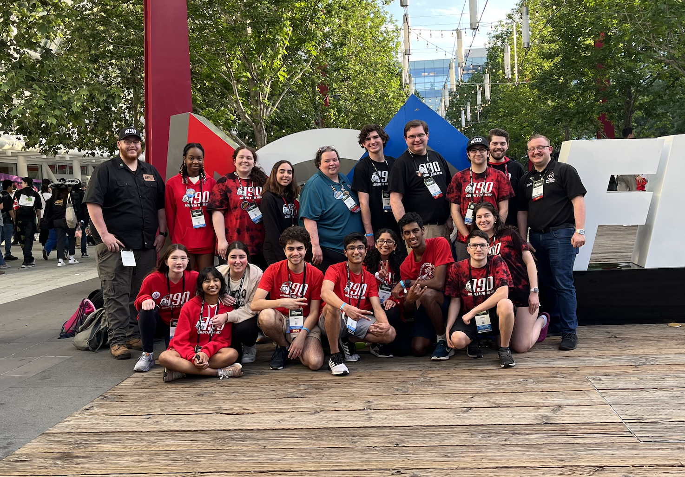
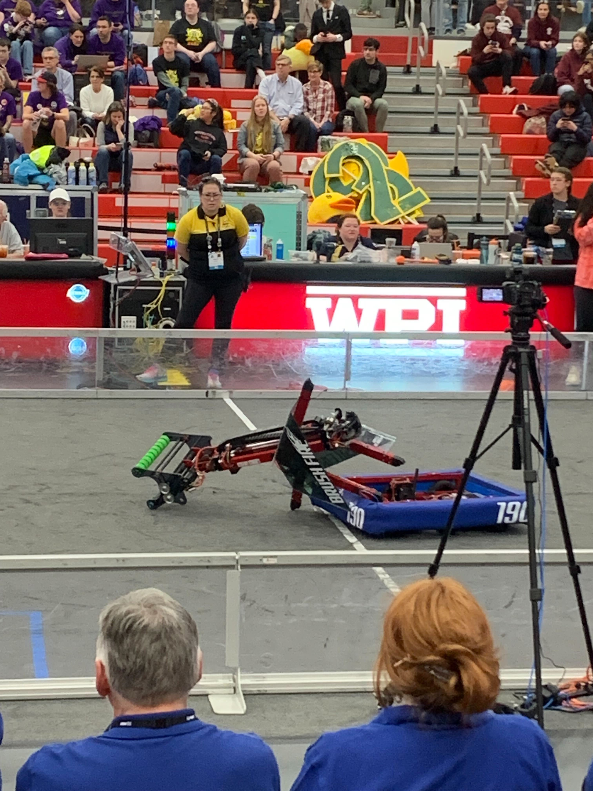
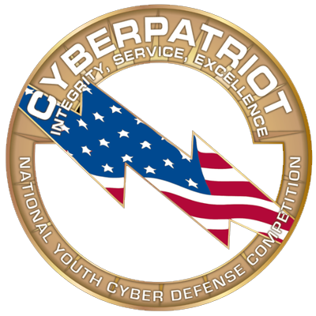
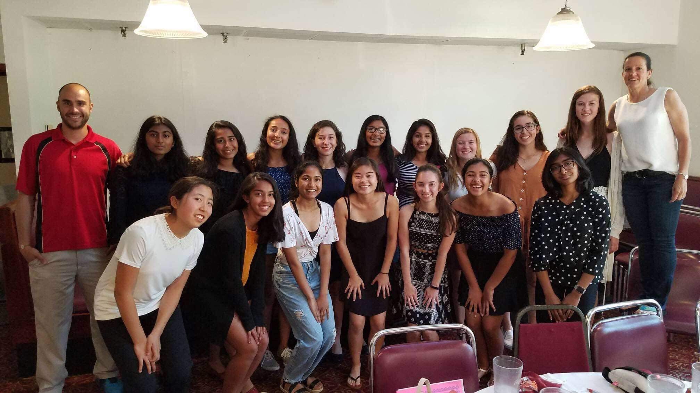
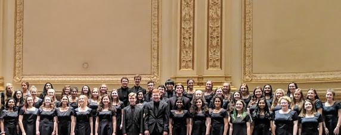

Robotics Team FRC 190
 
I've been on Team 190, a FIRST Robotics Competition team, since 2020. I was on the team as a Mass Academy student and am now a mentor for the team as a WPI student. As a student, I worked on mechanical design, manufacturing, and programming. At events, I led our scouting team and presented our team for the Impact Award. As a mentor, I've been teaching students the skills I learned when I was a student and what I learned from my coursework at WPI as a CS and RBE major.
This past season, our team faced many ups and downs, including our robot snapping in half during the elimination matches at the WPI District event! We ended the season competing at the FRC World Championships in Houston. During the season, I created a scouting software, GompeiScout (named after WPI's mascot Gompei), for our team to use to collect and analyze data about other robots. Keeping track of this data helps us create winning strategies and know what to expect when playing with or against other teams. Check out the code on GitHub!
Mass Academy 2020-2022
Math Team
Math Team at Mass Academy gives students the opportunity to practice and participate in math competitions. I mainly competed in WOCOMAL (Worcester County Math League) and the AMC 12 A and B during junior year.
CyberPatriot
CyberPatriot is a computer science extracurricular activity during B and C terms which is all about securing a computer or server. This involves creating firewalls, ensuring that the correct users can log in, creating settings for secure passwords, setting up certain services, and so much more. My team (Ronit, Jon, Andrew, Shreya, and Ansh) and I worked on Windows, Windows Server, Ubuntu, and Debian as well as a packet tracer and networking quiz. I worked mainly on the Ubuntu image. I enjoyed competing during my junior year, in which my team were in the gold division, and my senior year, in which my team ranked #3 in the Massachusetts platinum division.
Before Mass Academy
Tennis
I have been playing tennis since I was six years old. I started by taking the classes that were offered in my town. My favorite part about the sport back then was the aspect of independence. Tennis relies very much on the individual player having good technique and coming up with an impeccable strategy. I also enjoyed playing with other people. As I grew older, I spent the weekends connecting with family and friends and enjoying the sunshine outside through tennis.
When I got to high school and joined the tennis team there, I began to work a lot more on my tennis skills. We practiced five days a week, focusing on running (endurance), footwork, the technique of the strokes, holding a rally, and game strategy. The practices were hard work, but it allowed me to improve very much as a tennis player. After practice, the tennis team would sometimes hang out, especially if it was the night before a match. We would go to Kimball Farm for ice cream, a local restaurant, or have a spaghetti dinner at one of our houses. Over the weekends, we would go out and play tennis with each other for fun, to improve our skills, and spend time with each other.
The matches were extremely fun, too! We would all compete with all that we had in our matches, and play great games. From each match, I would learn a lot about how different strategies worked and how I could improve my technique to play more effectively. My doubles partner and I improved our game through the season and got extremely close. We knew what move the other person was going to make and knew how to lift each other up. Overall, tennis has helped me develop a growth-oriented mindset and a love for the balance between individual and teamwork.
Choir
In fifth grade, I joined the chorus at my elementary school. Once a week, we would meet before school and sing together, preparing for a concert and celebrating music with one another. Ever since then, I have continued singing in a choir. As I began to sing more and gain experience, I realized many small details about how a choir comes together. The harmonies between each voice part could come together to bring one big sound filling the auditorium. If every individual singer knew their part and sang expressively, the choir could produce beautiful music. Besides singing with other people, I enjoyed practicing on my own and playing around with the rhythms and chords with my voice and on the piano. This helped me to better understand the song and what the final sound was supposed to be like. Something else I began to take notice of was the balance between individual voices and the overall sound product. The singers in one section had to find the same dynamic and vowel shape to sing with, and the four sections (soprano, alto, tenor, and bass) had to find a balance between the varying pitches. Taking the composer’s instructions and bringing them to life as a choir could produce the most wonderful sounds that could ever be heard.
Performing with the whole choir was like being in a different world. The feeling of singing on stage, surrounded by the people that love making music with you, is so wonderful. All of the emotions and colors of the music come flowing out to make such a beautiful and expressive sound. My favorite performance was with the Westford Academy choir at Carnegie Hall. We joined many other schools to form one large choir, and had a moment to sing our own piece, “Earth Song” by Frank Ticheli. I’m so grateful to have had the opportunity to perform in such a beautiful place with my classmates whom I worked hard for two years with to produce beautiful music.
Piano
When I was in elementary school, I began to take piano lessons. My favorite things to play were the scales. I was fascinated with the way that notes sounded together and how chords were built, even at the most basic level. During practicing, I would take ten or twenty minutes to just play around with the music that came from pressing different keys. As I grew older, I fell in love with the various emotions that each key signature could show, and how that could be amplified with the use of dynamics and expression. The works that I am most proud of are "Nocturne" by Billy Joel and the first movement of Beethoven’s “Moonlight Sonata." Both videos are of me performing at the Parish Center for the Arts in Westford, MA.